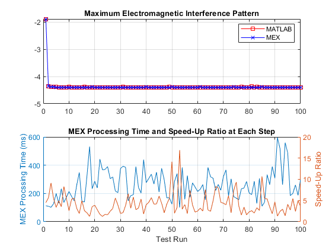

Contents
A Testbench for ALM
Frequency is proportional to the number of peaks
relFreqConst = 2*pi*2.5;
amp = 2.2;
phase = -[0; 0.54; 2.07];
numSources = 3;
height = 3;
% All point sources are aligned at [x_i,y_i,z]
xcoords = [2.4112
0.2064
1.6787];
ycoords = [0.3957
0.3927
0.9877];
zcoords = height*ones(numSources,1);
lb = [-0.5; -2];
ub = [3.5; 3];
Initial algorithm parameters
sigma = 3; epsilon = 1e-6; alpha = 1.3; beta = 0.5; maxIter = 1000;
Run the test
[x, fval] = ALM_solver_for_Maximizing_MPLIP(amp, phase, ... relFreqConst,numSources,xcoords, ycoords, zcoords, sigma, ... epsilon, alpha, beta, maxIter, lb, ub); disp('The optimal solution: '); disp(x); disp('The optimal objective value: '); disp(-fval);
The optimal solution:
1.2592
0.4284
The optimal objective value:
4.3702
Repeated testing
runNum = 100; runTimes = zeros(runNum, 1); optFvals = zeros(runNum, 1); relFreqConst_array = linspace(0.01, 100, runNum).*relFreqConst; for test_index = 1:runNum relFreqConst_tmp = relFreqConst_array(test_index); tic; [~, fval] = ALM_solver_for_Maximizing_MPLIP(amp, phase, ... relFreqConst_tmp, numSources, xcoords, ycoords, zcoords, sigma, ... epsilon, alpha, beta, maxIter, lb, ub); runTimes(test_index) = toc; optFvals(test_index) = fval; end
C code generation
% Define the properties of the input based on the data in the first time frame. compInputs = {amp, phase, ... relFreqConst, numSources, xcoords, ycoords, zcoords, sigma, ... epsilon, alpha, beta, maxIter, lb, ub}; % Code generation may take some time. h = msgbox({'Generating code. This may take a few minutes...';'This message box will close when done.'},'Codegen Message'); % Generate code. try codegen ALM_solver_for_Maximizing_MPLIP -args compInputs; close(h); catch ME close(h); throw(ME); end
Test the generated code
runTimes_mex = zeros(runNum, 1); optFvals_mex = zeros(runNum, 1); for test_index = 1:runNum relFreqConst_tmp = relFreqConst_array(test_index); tic; [~, fval] = ALM_solver_for_Maximizing_MPLIP_mex(amp, phase, ... relFreqConst_tmp, numSources, xcoords, ycoords, zcoords, sigma, ... epsilon, alpha, beta, maxIter, lb, ub); runTimes_mex(test_index) = toc; optFvals_mex(test_index) = fval; end
Compared the performance of both the codes
figure subplot(2,1,1) plot((1:runNum)', optFvals, 'rs-', ... (1:runNum)', optFvals_mex, 'bx-') title('Maximum Electromagnetic Interference Pattern'); legend('MATLAB', 'MEX') grid subplot(2,1,2) yyaxis left plot((1:runNum)', runTimes_mex*1e3); ylabel('MEX Procssing Time (ms)'); yyaxis right plot((1:runNum)', runTimes ./ runTimes_mex) ylabel('Speed-Up Ratio'); title('MEX Processing Time and Speed-Up Ratio at Each Step') grid xlabel('Test Run') disp('Avg. Speed-Up Ratio: '); disp(mean(runTimes ./ runTimes_mex));
Avg. Speed-Up Ratio:
4.1882
